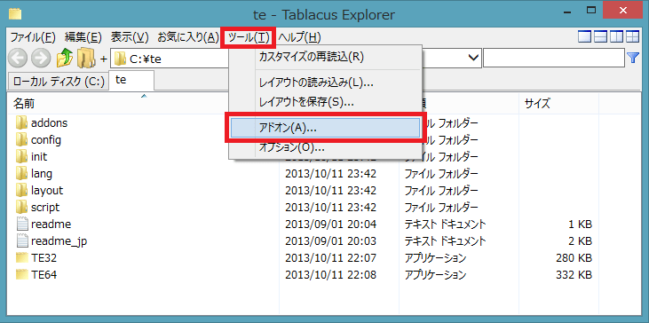
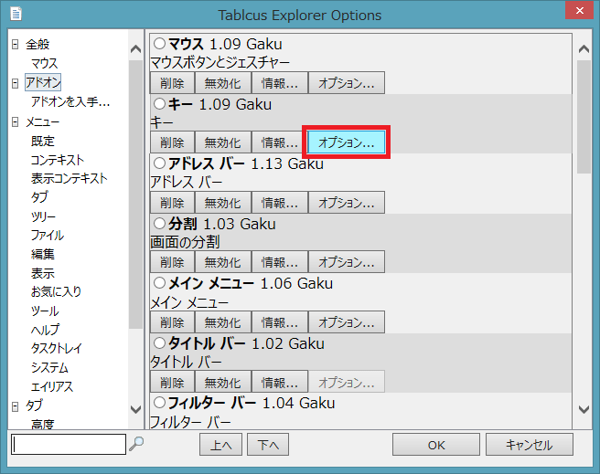
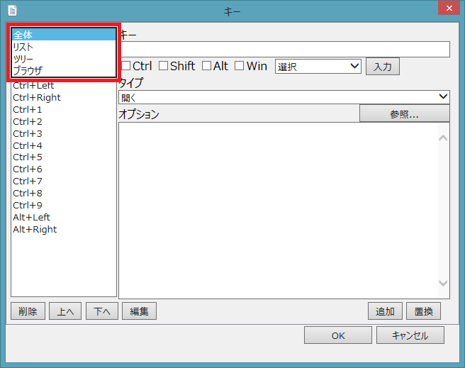
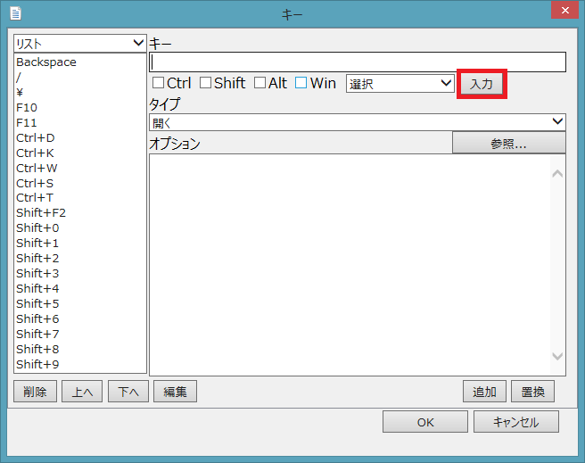
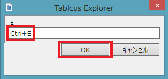
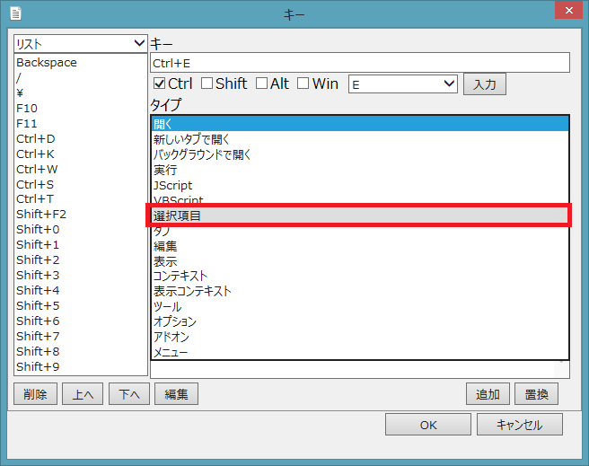
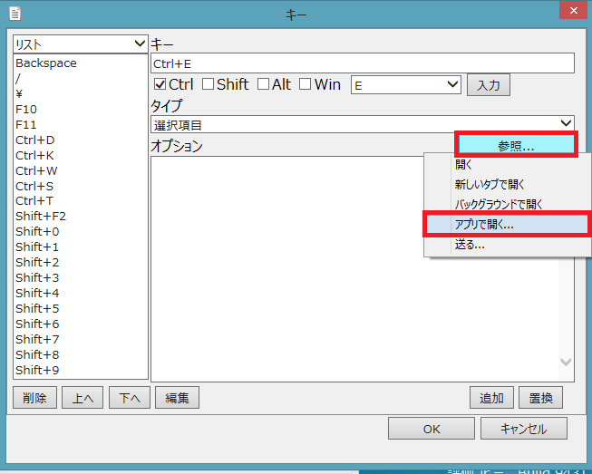
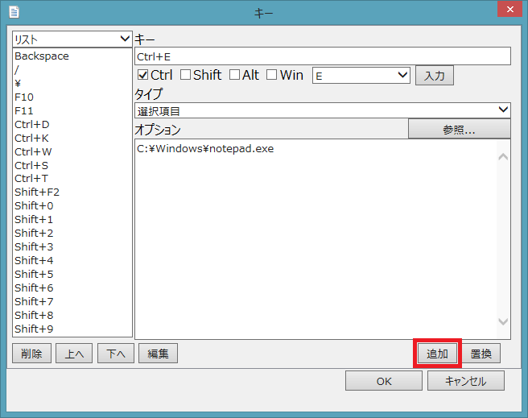
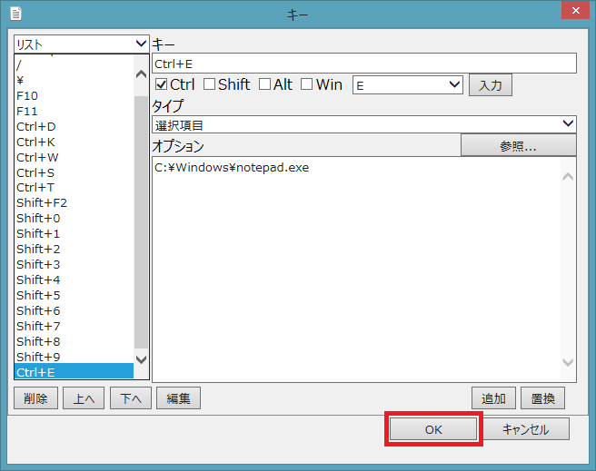
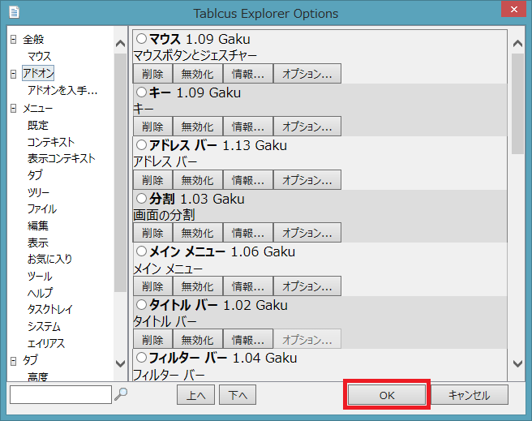

|
Tablacus Explorer キーのカスタマイズ方法
|

|
Tablacus Explorerのキーのカスタマイズはアドオンのキーのオプションから設定します。
リスト上の「Ctrl+E」に選択した項目をエディタで開く様にしてみましょう。
ツール→アドオンを選択します。

キーの「オプション...」を押します。アドオンが探す場合に左下の入力欄と虫眼鏡で検索することができます。

まず、キーの有効場所を設定します。左上の「全体▼」となっている場所をクリックして「リスト」選びます。
「全体」はTablacus Explorer全体で有効
「リスト」はリスト部分で有効
「ツリー」はツリー部分で有効
「ブラウザ」はアドレスバーやツールバーなどリスト、ツリー以外の場所で有効

「入力」ボタンを押します。

入力ダイアログが表示されたら、キーボードの「Ctrl」を押しながら「E」を押して下さい。
キー欄に「Ctrl+E」と入力されるのでマウスで「OK」を押して下さい。

タイプを「選択項目」に変更します。

オプションの「参照...」を押して「アプリで開く...」を選びます。

エディタソフトを選択して「開く(O)」を押して下さい。

「追加」をクリックして「Ctrl+E」の設定を追加します。

「OK」をクリックしてキーのアドオンのオプションを閉じます。

アドオン画面で「OK」をクリックすると完了です。
